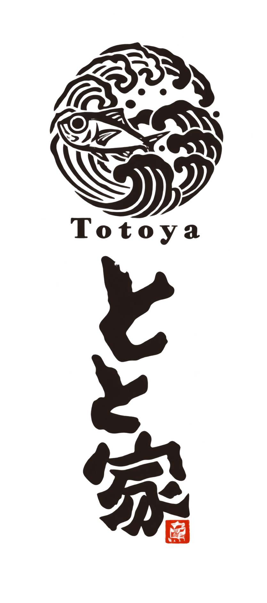
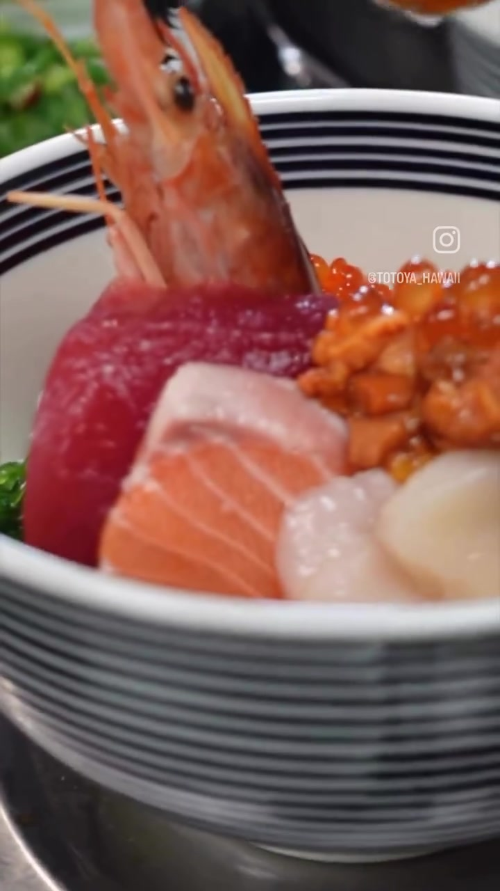
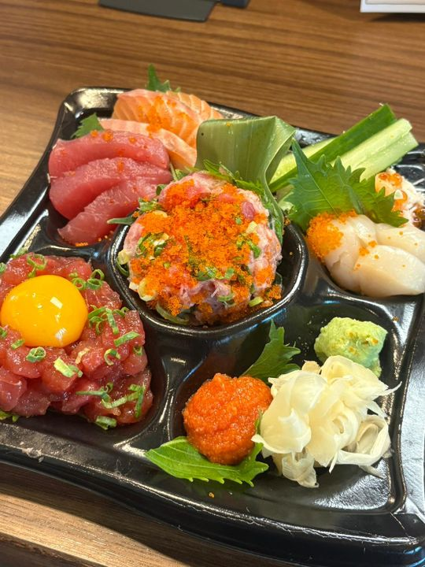
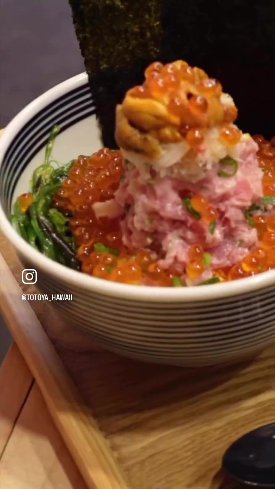

Signature bowls
Original negitoro, with your choice of salmon roe, uni, or snow crab.
Ume · Take · Matsu · TokujoOnly at Totoya
Negitoro & Japanese Seafood Bowls

From our signature negitoro bowls to a hand-roll night at home, there’s more than one way to enjoy TOTOYA.
Original negitoro, with your choice of salmon roe, uni, or snow crab.
Ume · Take · Matsu · Tokujo
Explore our sashimi bowls and find your own favorite combination.
See each location’s menu
Make it a hand-roll night. A set for 2–3, with 600g of sushi rice and 20 nori sheets.
Kaimuki only · Takeout
海の恵みを、一杯に。
Kaisendon brings seafood and rice together in one satisfying bowl. At TOTOYA, enjoy it with us or take your favorites home.
Start with our original negitoro or explore the sashimi selection.
Discover salmon roe, uni, snow crab, and more on the menu.
A lunch break, an evening together, or a bowl to take home.
Beautiful seafood. A generous bowl. Find your favorite kaisendon at TOTOYA.
Reservations are now welcome at Kaimuki and Aiea. Book Kaimuki online, or call our Aiea team to arrange your visit.
Visit us in Kaimuki, Ala Moana / Piikoi, or Aiea. Kapolei is coming next.
Open daily
Lunch 11:00 AM – 2:30 PM
Dinner 5:00 PM – 8:30 PM
Open daily
Lunch 11:00 AM – 2:30 PM
Dinner 5:00 PM – 8:30 PM
Open daily
Lunch 11:00 AM – 2:30 PM
Dinner 5:00 PM – 8:30 PM
Our Kapolei location is planned to open in late February. Stay tuned for the opening date, address, and more details.
Opening updatesOur Hand-roll Set brings a little TOTOYA to your table. Available for takeout at Kaimuki.
View the Instagram postPlan your next visit to our Kaimuki or Aiea location. We look forward to seeing you.
Plan your visit